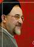

|
|

سيد محمد خاتمي :دادن حق يكطرفه ازدواج مجدد به مردان جفا به زنان است
چهار شنبه7 شهریور 1386
روزنامه سرمایه : سيد محمد خاتمي، رييس موسسهء بينالمللي گفتوگوي تمدنها معتقد است كه دادن اجازه و حق يكطرفه به مرد براي ازدواج مجددجفايي بزرگ در حق زنان است.
رييسجمهوري پيشين در گفتوگو با «سرمايه» دربارهء لايحهء جديد قوهء قضاييه با عنوان حمايت از خانواده گفت: «اگرچه اين لايحه را نخواندهام اما با توجه به آگاهي و اشرافي كه آقاي شاهرودي دارند حتما در آن موارد سنجيدهاي عنوان شده است.»
خاتمي، شاهروي را مجتهدي روشن بين توصيف كرد و افزود: «قطعا آقاي شاهرودي در اين لايحه به موضوع عدالت توجهكردهاند چراكه ايشان را مجتهدي روشننگر ميبينم.»وي همچنين تاكيد كرد: «اينكه واقعا به زنان ما جفا شده است و دادن حق يكطرفه به مرد خيلي جاها سبب ميشود كه به زنان ستم شود، موضوعي آشكار است.»وي افزود: «اينكه مجوز ازدواج مجدد مرد با اجازهء زن صورت گيرد چيز بسيار جالبي است و البته اميدوارم كه از نظر شرعي نيز مراتب امر ديده شود كه البته با اعتقادي كه به آقاي شاهرودي دارم مطمئنم كه ايشان از نظر شرعي و قانوني نيز به اين موضوع توجه كردهاند.»
كمتر از يك ماه گذشته لايحهاي براي حفظ كيان خانواده از طرف قوهء قضاييه به دولت ارايه شد. براساس يكي از بندهاي اين لايحه مردان ميتوانند بدون اجازهء همسر اول و با كسب اجازه از دادگاه ازدواج مجدد كنند.اين در حالي است كه تا پيش از اين در قوانين ايران ازدواج مجدد مردان به اجازهء همسر اول منوط بود.اين لايحه تا چندي ديگر در مجلس شوراي اسلامي جهت تصويب مورد بررسي قرار ميگيرد.
تاكنون گروههاي مختلف فكري نسبت به طرح اين لايحه واكنش نشان دادهاند.